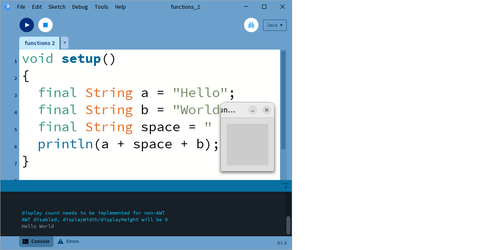
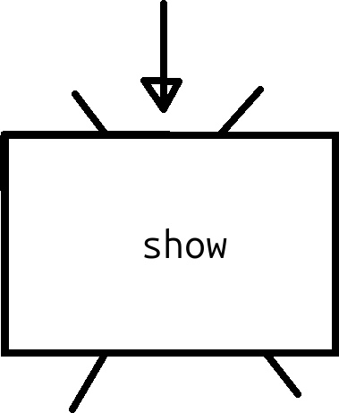
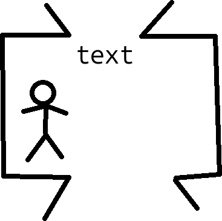

36. Funktioner 2¶
Funktioner hjälper en programmerare att uttrycka sina tankar bättre: istället av göra samma sak med felmeldningen överallt, kan man göra det med en funktion.
36.1. En String¶
En String är en datatype för text, dvz ingen, ett, eller fler karaktär.
Kolla på och kör följande kod. Kan du förstå vad allt betyder?
void setup()
{
final String a = "Hello";
final String b = "World";
final String space = " ";
println(a + space + b);
}
void draw() { }
36.1. Svar¶
Här ser vi några saker:
drawär en funktion som gör inget. Dät är fint: vi vill bara göra något en gång.- Nyckelordet
finaldyker upp.finalbetyder att värdet av variabeln kan inte andras efter variablen fick den värde. Om du kan användafinal, så göt detta! - Vi använder tre
String. Värdet av enStringär mellan dubbla citattecken ("). - Vi använda ett plus tecken (
+) att koppla ihop flerStrings, så att dem blir ett ord - Vi använder en funktion som heter
println, som skriver i konsoln ('Console', längst nere) av Processing

36.2. Att visa fel¶
Här skapar vi en funktion själv, som visar text:
Här ser vi några saker:
- Funktionen heter
show - Mellan rundparenteser (
(och)) finns argumenter som går inne i funktionen. I den här fall är det ett argument, av datatypString. På grund avfinalkan värdet inte blir ändrat. - Mellan måsvingar (
{och}) finns funktionskroppen och där blir inmatningentextanvänt: den blir skickad tillprintln.
Det är hjälpsams att ser en funktion som den här tva cartoonerna här
nere. Först, en funktion utifrån är likadant en låda med ett
namn (i den här fall show), ett ingångshål från ovan sida, och
ett utgångshål på nere sida:

Inne i funktion lever en lille gubbe som gör saker.
Gubben har ett namn för saker som kommer in i ingångshålet,
text i den här fall.
Gubben vet var utgångshålen är, men i den här fall blir den inte användt.

Detta är hela gubbens värld. Tekniskts heter detta att funktionsargumenter har ett lokalt omfång (engelska: 'local scope'): dem bara är kända som detta inom funktionen.
Skapa ett nytt funktion som heter show_error.
Om du ger funktion en String, visar den ERROR: och
värdet av Stringen. Test funktion med att använda den i din kod.
36.2. Svar¶
Här är ett möjligt svar:
void show_error(final String e)
{
println("ERROR: " + e);
}
void setup()
{
show_error("You should never start this program");
}
void draw() { }
Här, show_error kallar Stringen e. Du får kallar den hur som helst.
Man kan säga att e är för kort, och man föredra error_message istället.
Också text eller s ('en String')
funkar bra som namn av funktionsargumentet.
36.3. exit¶
Vär funktion är inte helt nyttigt för felsökningen: den bör stänga av programmet när något fel händer.
Lägg till den här rad inom funktionskroppen av show_error:
Vad tror du att exit gör? Vad händer?
36.4. Svar¶
show_error blir:
Du kan ser att exit stänger av programmet.
I vår fall säger programmet en felmeldning och stänger av programmet.
Det ska hjälper oss med felsökning!
36.5. Felsökning¶
Här har vi ett bekant program, nu med felsökning:
float x = 50;
void show_error(final String e)
{
println("ERROR: " + e);
exit();
}
void setup()
{
size(320, 200);
}
void draw()
{
ellipse(x, 100, 100, 100);
x = x + 1;
if (x > width + 50)
{
x = -50;
}
if (x > width + 50) show_error("x is too big");
if (x < -50) show_error("x is too small");
}
Den här stil är kallad 'att programmera defensivt': du, som programmerare, vet att du är felaktig, och du hjälper dig själva med dina fel.
36.5. Slutuppgift¶
Tar en spel av dig själva och lägg till funktionen show_error
och användt den på ett nyttigt sät åtminstone fem gånger.